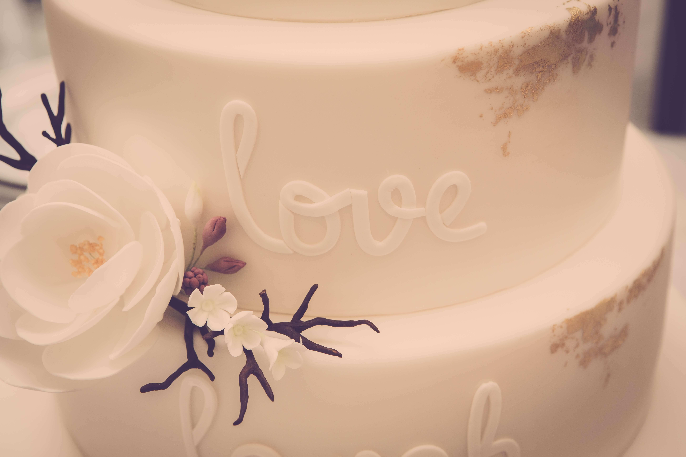

During the last estimation training day I participated in, I decided I wanted a simple way to explain the complexity of estimation, and to highlight the shared ownership. For context, the activity was to estimate full scope, which often comes up in cases where funding is less agile. In practice, it can be pretty darn risky to mix lean requirements and fixed bid, so here's my little take on it.
Recipe for success
I've been working on this little scenario: estimating the effort to deliver cake.
Let's think about the deliverable - cake. Take a moment to picture it. Cupcakes, sheet, or other? Single or multi-tiered? Simple or ornate? Now, without getting too granular, consider other unknowns: What's the event? Who's the cake for? Are we coordinating with other vendors?
There are endless assumptions that could be made, and yours may differ from the person next to you. At one end it might be cupcakes with icing and sprinkles for a kids birthday. At the other, a multi-tiered cake with hand made decorations for a wedding, plus coordinating with the caterers and venue.

What this highlights, is the risk of the unknown, which may not be surfaced in lean requirements. IF you must estimate, do not underestimate the importance of validating assumptions and developing shared understanding. The best way to do this, is agile workshops and discovery, so engage the whole team early in the process, identify and prioritize assumptions, and facilitate those conversations.
Estimating what you doughnut know
What if I asked someone to estimate the ornate wedding cake - Does everyone know how long it takes to bake? Decorate? What about each fondant flower? And working with the client, caterer and venue; are there risks?
Some of you may know the answers, but I should admit now that I don't bake, so I haven't a clue. I would ask a baker.
This brings me to my second point, IF you must estimate, make sure you have the right people in the room. The less knowledge and experience (even just with estimating) the lower the certainty (and higher the risk) - and rightly so. When projects have more specialized deliverables, or require coordinating with other vendors, take the extra day to find those who know what you don't.
Icing on the cake
The last bit I thought I'd touch on, is the positive correlation between uncertainty and padding. Next time you catch yourself layering it on to protect you and your team, take that as helpful hint that you may have too many unknowns. If you have a long list of assumptions, start validating. What you might also consider, is slicing up the plan, where the first few include goals to validate certain assumptions (often tech spikes). If you don't have any.. well that's just a bit terrifying.
It's been a slice, cheers to the future cake bosses